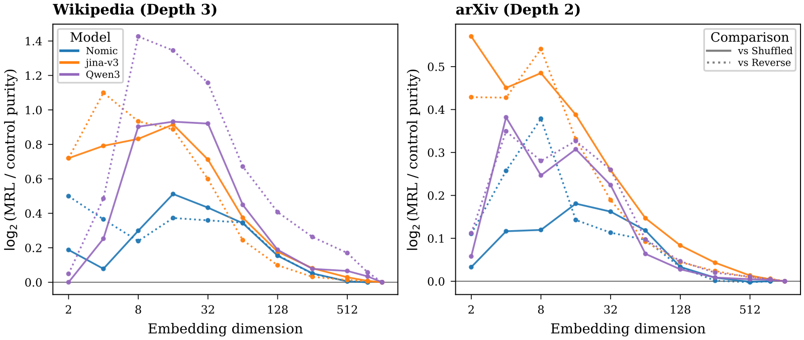
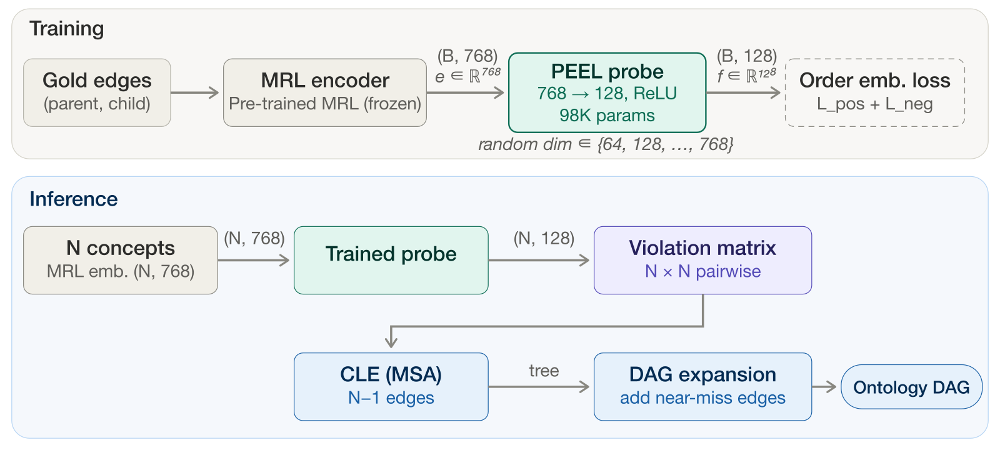

Contents · 8 sections
1Key concept: why MRL prefixes might match category granularity2Finding: taxonomy signal sits in the leading dimensions3How PEEL turns the signal into a taxonomy graph4Results5How much the prefix length matters6Limitations as I see them7How a search team could try it8AssessmentSHARE
This paper contributes one finding and one use of it. The finding: in off-the-shelf retrieval embeddings trained with Matryoshka Representation Learning (MRL), taxonomy information is concentrated in the leading dimensions. When only a short slice of dimensions is kept, cutting in the original order groups concepts of the same category better than cutting after a random shuffle or keeping the last dimensions (Figure 1). In other words, this coarse-to-fine ordering of dimensions lines up with the broad-to-narrow levels of a taxonomy. The use is PEEL, a method that "peels" a taxonomy out of embedding prefixes. It trains only a 98K-parameter projection on top of frozen embeddings that learns to tell which of two concepts is the broader category (for example, "animal" is the parent concept of "cat"), and then assembles a taxonomy graph from a concept vocabulary. Measured by Graph F1, it reaches 0.885 on a Wikipedia benchmark and 0.931 on an arXiv benchmark (Table 2). For search and content-understanding teams the finding matters: an MRL embedding already in production may carry category structure that can be read out. PEEL's scores, however, come with two preconditions: it is handed the full gold concept vocabulary, and it needs a labelled set of broad-to-narrow category pairs from a source domain to train the projection.
Key concept: why MRL prefixes might match category granularity
In an MRL vector, the earlier dimensions carry coarser meaning (§2.4). The authors ask whether this coarse-to-fine ordering matches the broad-to-narrow levels of a taxonomy.
The benchmarks come from OLLM, an earlier method that fine-tunes a large language model to generate taxonomies from documents. The Wikipedia benchmark has 8,033 concepts, 14,673 edges and three levels; the arXiv benchmark has 61 categories and two levels (§5.1).
Finding: taxonomy signal sits in the leading dimensions
The authors test three MRL models with different architectures: Nomic-embed-text-v1.5 (137M parameters, BERT-style), jina-embeddings-v3 (572M, XLM-R-style) and Qwen3-Embedding (600M, decoder-style) (§3). They keep only the first d dimensions and check how many of each concept's 10 nearest neighbors share its category (kNN purity), with category taken from the deepest gold level (Figure 1 caption).
To show that the effect comes from the leading dimensions rather than from simply having fewer dimensions, they use two controls. One shuffles all dimensions randomly before cutting, which keeps the amount of information but breaks the order. The other keeps the last d dimensions. On all three models, cutting in the original order clearly beats both controls, and the advantage is largest for short prefixes (Figure 1). At full length all three methods use the same vector, so the results coincide.

Two claims need to be kept apart here. Figure 1 shows that the leading dimensions carry more taxonomy information than shuffled or trailing ones. It does not map a given prefix length to a given taxonomy level, because purity is computed only at the deepest level. "Shorter prefixes match coarser categories" is the authors' interpretation on top of that, and its most direct support is one example: under the Mathematics subtree, the tree decoded from the first 64 dimensions has 1 child, the one from 256 dimensions has 19, and the one from all 768 has 68 (§5.4, Figure 3). The same section reports a result that cuts against the picture of one tree unfolding level by level: trees decoded at different prefix lengths are not nested. For any two prefix lengths, the edge-set Jaccard of the two trees stays below 0.18, and 99% of nodes change parent (§5.4). A more accurate reading is that each prefix length gives its own, different hierarchy, not a coarse and a fine version of the same tree.
As a supporting consistency check, the authors run a one-way analysis of variance on every dimension. It asks how much of that dimension's variation is explained by grouping concepts by their category at one level (η², higher means that level separates better), averaged over all dimensions. On Wikipedia η² is 0.04–0.07 for level 1, 0.13–0.18 for level 2 and 0.34–0.40 for level 3 (Table 1), and all six model-and-dataset pairs rise from shallow to deep. The number of classes, however, differs sharply by level (33, 875 and 7,124), and finer splits tend to raise η² on their own. The authors say these values show consistency across models, not the absolute strength of each level (Table 1 caption). This check also never varies prefix length, so it cannot on its own support "short prefixes match coarse categories".
How PEEL turns the signal into a taxonomy graph

PEEL has three steps (§4, Figure 2): Hoot says

Parent edges only
- animal → dog
- violation 0, satisfied
- all at (0.3, 0.3)
- violation 0, also satisfied
- result
- no structure at all
Plus a margin m=0.05 for unrelated pairs
- car over dog
- 0.4² = 0.16 ≥ m
- dog over car
- 0.3² = 0.09 ≥ m
- if collapsed
- both 0 < m, penalized
Illustrative, two dimensions only: PEEL encodes 'A contains B' as 'A is no larger in every coordinate'. Animal (0.2, 0.2) is a parent of dog (0.5, 0.4): no coordinate is larger, so the violation is 0. But if every concept were mapped to (0.3, 0.3), every parent edge would hold too and nothing would be learned. The loss's second half requires unrelated pairs to have a summed squared overshoot of at least a margin m: car (0.9, 0.1) and dog each overshoot the other past m, so they are told apart. Source: illustrative example of the paper's §4.2 order embedding loss (Eqs. 2–4) and Eq. 5
- A small probe. A linear layer plus ReLU projects the 768-dimensional frozen vector from Nomic-embed-text-v1.5 (§5.1) to 128 dimensions, for 98K parameters in total. The design is meant to read out structure the embedding already has, not to learn a new representation. The training objective is an order embedding loss: if A is a parent of B, every coordinate of A should be no larger than the matching coordinate of B, so "A contains B" becomes "A is coordinate-wise no larger". That rule alone could be met by mapping every concept to the same point, so the loss has a second half: for pairs with no parent-child relation, the squared amounts by which A exceeds B, summed over dimensions, must reach a margin m, or the pair is penalized (Eq. 2–4). Training uses 80% of the Wikipedia gold edges (an edge-level split, with another 10% for validation), for 10 epochs, in about 4 seconds on one GPU. At each step the embeddings are cut to a length drawn from 64, 128, 256, 384, 512 or 768 dimensions and zero-padded back to 768 before the probe, so one probe works across prefix lengths (§4.2, §5.1).
- Extract a tree. For any two concepts i and j, PEEL checks by how much i's projection exceeds j's in each dimension, counts 0 where it does not, squares the overshoots and adds them up. This sum is the violation score for "i is a parent of j" (Eq. 5). For example, if i exceeds j only in two dimensions, by 0.1 and 0.3, the score is 0.01 + 0.09 = 0.1 (illustrative). A lower score means a more likely parent, and large overshoots are penalized more heavily than small ones. All concepts form a weighted directed graph, and the Chu-Liu/Edmonds algorithm finds the rooted tree with the lowest total violation. This step needs no threshold (§4.3).
- Expand into a directed acyclic graph. A concept can have several parents, so PEEL adds more edges in order of increasing violation score while avoiding cycles, up to an edge budget. On Wikipedia, inference uses the first 512 dimensions and a budget of 15,000 edges, both chosen on the Wikipedia validation set (§4.4, §5.1).
Results
First, the metrics. All three F1 scores compare the recovered graph with the gold taxonomy (§5.1). Lit. F1 requires both concept names of an edge to match a gold edge exactly. Cont. F1 uses embedding similarity to pair recovered edges one-to-one with gold edges in the best possible way, and each pair scores the lower of its two endpoint similarities, so an edge with different but close names still earns credit. Graph F1 first computes a vector per node: the embedding of the node name is repeatedly averaged, with weights, with its neighbors' embeddings along the graph links (SGConv), so two nodes end up close only when their names and their neighbors are both similar. It then pairs the nodes of the two graphs one-to-one in the best possible way; each pair scores the similarity of its two vectors, and these scores give precision and recall, combined as F1. This paper does not spell out the conversion formula and uses the OLLM benchmark implementation (Lo et al., 2024). The authors treat Graph F1 and Cont. F1 as the main metrics. Both are soft, similarity-based scores that do not need exact names, which is why the same PEEL run reaches 0.885 on Graph F1 but only 0.111 on Lit. F1.
| Dataset | Method | Input | Graph F1 | Cont. F1 |
|---|---|---|---|---|
| Wikipedia | PEEL | concept vocabulary only | 0.885 | 0.551 |
| Wikipedia | Memorisation (copies training edges) | training edges | 0.419 | 0.314 |
| Wikipedia | OLLM | article titles and abstracts | 0.644 | 0.500 |
| arXiv | PEEL (no arXiv data) | concept vocabulary only | 0.931 | 0.604 |
| arXiv | OLLM (transfer) | article titles and abstracts, plus 2,048 arXiv samples | 0.633 | 0.357 |
The table above uses numbers from Table 2. What this shows: a 98K-parameter probe trained for 4 seconds scores higher than OLLM's reported Graph F1 and Cont. F1. This is not a same-conditions comparison, though (§5.3). OLLM must discover the concepts in documents and then link them, while PEEL receives the gold concept vocabulary and uses Wikipedia gold edges to train its probe. The authors present OLLM only as a cross-task reference, not a ranking. The arXiv result is better evidence of transfer, because the probe never saw arXiv edges and used no arXiv data for tuning. On arXiv the inference settings are all 768 dimensions and a tree only, with no extra edges, which the authors say follows from the small 61-concept structure (§5.1).
On the exact-name metrics the picture is mixed (Table 2). On Wikipedia, PEEL's Lit. F1 is 0.111, below the 0.134 of Memorisation and the 0.124 of the fine-tuned Mistral-7B baseline. On Fuzzy F1, which uses a threshold to decide whether edge names are close, OLLM's 0.915 is also above PEEL's 0.877. On arXiv it is the other way round: PEEL's Lit. F1 is 0.298 and OLLM's only 0.040. So on Wikipedia PEEL mainly recovers the overall shape, and individual edges do not always match by name.
How much the prefix length matters
Table 3 fixes the probe output at 128 dimensions and varies only the input prefix length. From 64 to 768 dimensions, Graph F1 stays between 0.879 and 0.906, almost flat. Cont. F1 moves more: it peaks at 512 dimensions (0.551) and drops to 0.479 with all 768, which is why the authors chose 512. With the probe output shrunk to 32 dimensions (24K parameters), Graph F1 is still 0.870 and Cont. F1 0.517 (Appendix A, Table 4). So the headline 0.885 barely depends on which prefix is used, and the prefix choice shows up mainly in Cont. F1. The link between "prefixes carry taxonomy signal" and PEEL's headline score is looser than the opening framing suggests.
Limitations as I see them
- The inputs are not equal. PEEL receives the gold concept vocabulary and also needs gold parent-child edges to train its probe. In practice the concept list often has to be built by hand, and that cost is not counted.
- The 0.885 on Wikipedia is not a transfer result. The probe is trained on 80% of the Wikipedia gold edges but scored on the full 8,033-concept structure, so the evaluation graph includes those training edges (§5.2), and the inference settings were picked on the Wikipedia validation set (§5.1). The score mainly shows fit on the same data. The real transfer evidence is arXiv, which has only 61 concepts and two levels.
- Only two benchmarks are tested. The authors admit transfer is shown only for taxonomies no deeper than the training data, and domains such as biomedicine and law are untested (Limitation 1). Benefits for downstream tasks such as retrieval or question answering are not tested either (Limitation 2).
How a search team could try it
- If you already use MRL embeddings in production, first repeat the prefix control: take the category names from your own taxonomy and compute the same-category nearest-neighbor rate under prefix cutting, shuffled cutting and last-d cutting, and see whether the prefix clearly wins.
- If it does, train the PEEL probe on part of your taxonomy's edges and check whether it recovers parent-child links on held-out branches. Keep the training edges out of the evaluation, so the score is not inflated the way the Wikipedia number is.
- Use the recovered links for taxonomy completion or for assigning queries to categories, and compare precision and coverage against your current rules or human labels. Different prefix lengths decode different trees, so fix one length before comparing.
Assessment
| Aspect | Assessment |
|---|---|
| Importance of the problem | Medium: building taxonomies is costly, but it sits a bit off the core retrieval path |
| Novelty | Medium-high: the finding is new, while PEEL is a simple combination of known parts |
| Evidence | Medium: the three-model controls are solid, but only two benchmarks are used, no downstream task is tested, and cross-domain evidence is one small 61-concept dataset |
| Engineering cost | Very low: 98K parameters, seconds of training |
| Worth trying | Yes: a prefix control on your existing MRL embedding is cheap |
How did this read for you?
Hoot made a note. Thanks for the feedback.
One tap, no sign-in; tap again to undo. Only anonymous counts are kept, never who you are.
Discussion
Add experiment details, reproduction notes or a different take. Requires a GitHub sign-in.
Loading the discussion…